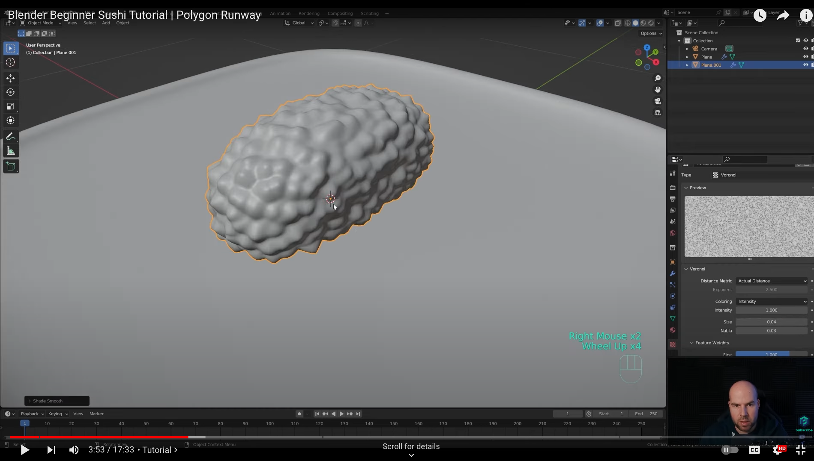
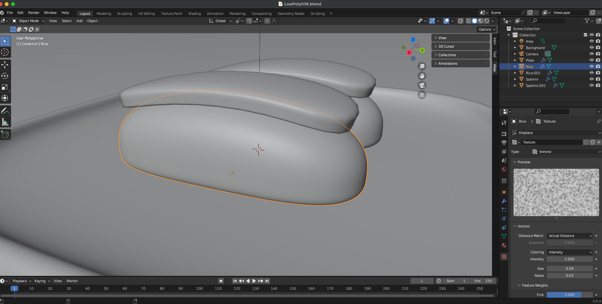
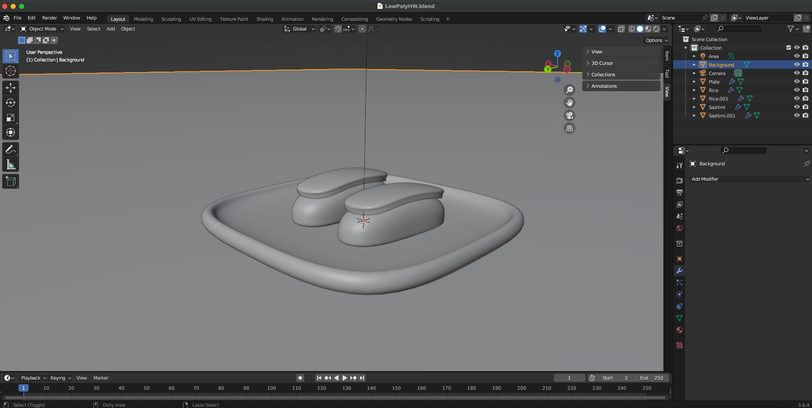
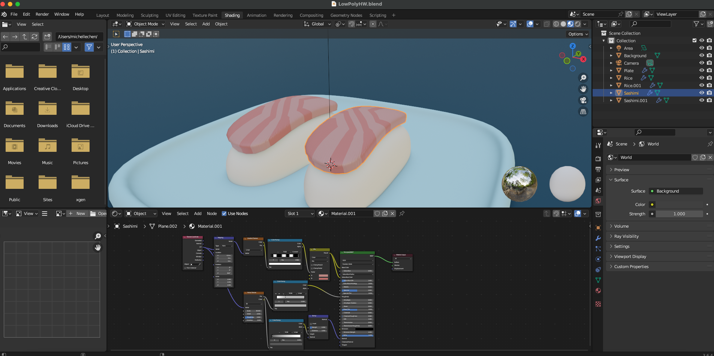
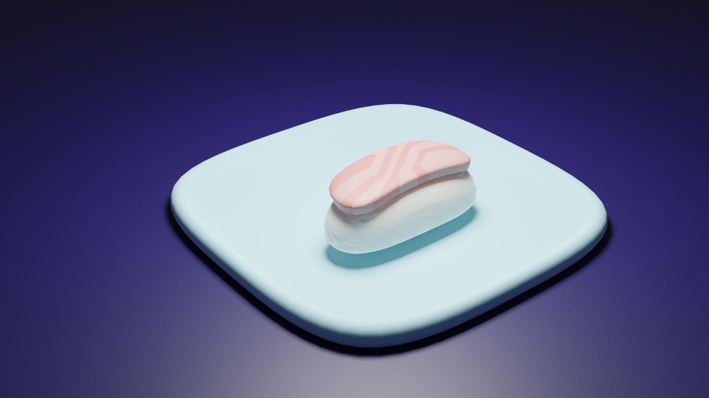
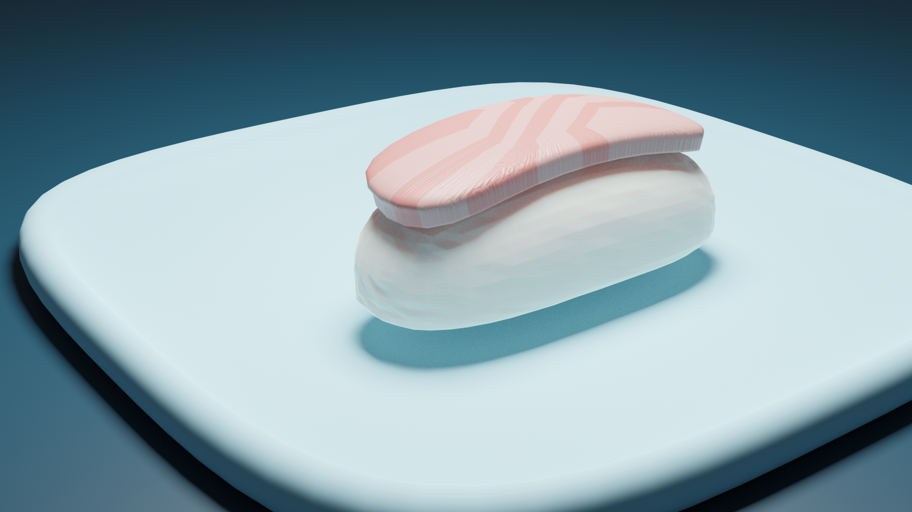
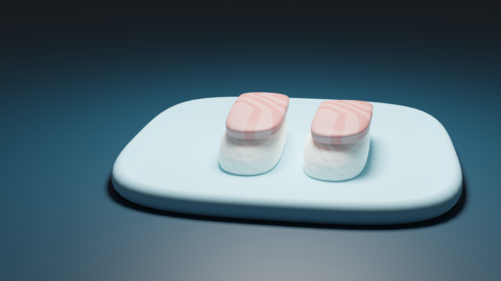

Week 5: Low-poly Modelling
Ideation & Approach
For my objects, I wanted to go with a food theme with foods that were simple in shape. I found a useful
YouTube Tutorial that went over how to create a piece of sushi on a plate to follow and make tweaks to. It was super helpful that we went over the basics of Blender in class such as grabbing items, adding in planes or other shapes, extruding/scaling objects, and adding in loop cuts. These were all part of the YT tutorial too to form the sushi shape but was a lot easier to follow on because we already went over them in class without the keyboard shortcuts (video included a lot of shortcuts but didn't seem to work on my computer for some reason). Process wise, it was pretty straightforward to shape the plate first by adding a plane to the collection and then the subdivision modifiers.
Next step was creating the rice which was interesting because the tutorial also went over the texture tool in Blender too. I followed it exactly as is but somehow my rice ended being a lot smoother than the one showed in the video. I couldn't exactly figure out how to get bigger "rice clumps" but still made it work by playing around with the settings myself.
Tutorial rice

Vs my rice

Viewport Shading Render

Creating the "sashimi" part was also pretty straightforward with create a plane and then extruding it to make a slightly taller rectangular shape. Then adding the subdivision modifier again to make it rounder and shading the whole area smooth. The hardest part of the tutorial was adding in the textures in the Shading panel. I also followed this part of the tutorial completely but had a hard time making the stripes show up in equal diagonal strips. I did like the end result of mine better though because real life sashimi isn't always perfectly lined so it maybe looks more "natural" the way I have it. Sometimes mistakes can have a good end result I guess!
I'm still not sure exactly how the linking of layers worked to create the final effect but hopefully through more practice I'll be able to better understand the process.
Shading Result

I added in one more piece of sushi to fill the plate again before moving on. Lastly, I added in a plane with an added material to make the glossy dark background. We hadn't done that in class but I liked the effect of it making the background look more 3D. I will definitely use this approach for future backgrounds too. I then used the approach of angling the camera at different angles and then aligning the view to capture the final renders.
Final Thoughts & Renders
Here are the final renders at various angles. It's interesting to me how even if you follow a tutorial, the end results can look significantly different from the original! But that's similar to what happened in our class activity as well. We were given the prompt to make a tree but everyone's tree ended up looking very different but equally amazing.


